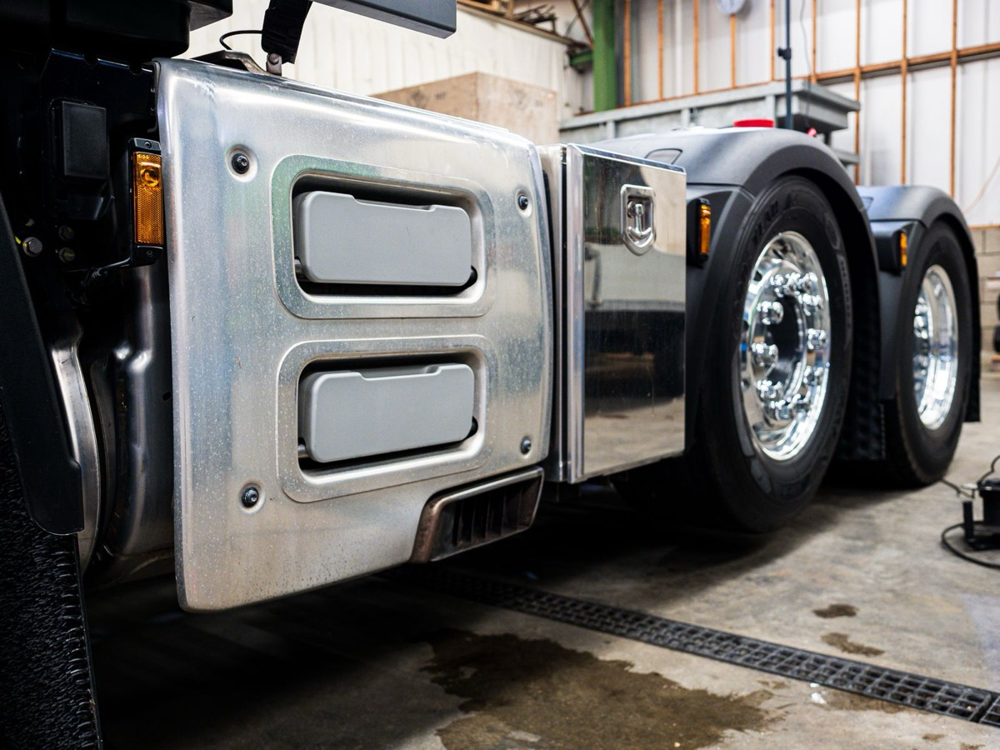
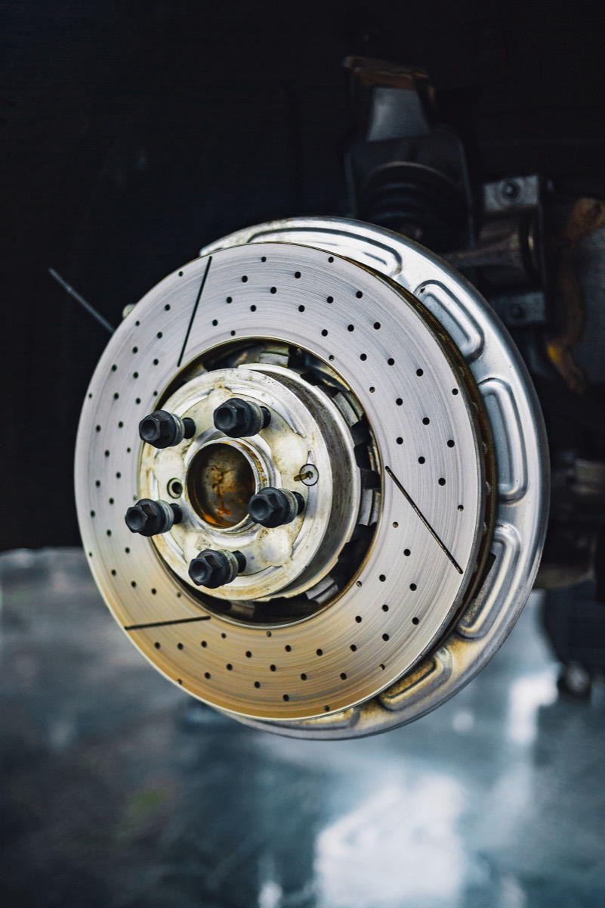

Wheel Spacers: Thickness Does Not Predict Price, and Bore Decides Fit
Shopping wheel spacers by thickness will lead you to the wrong part, because thickness is the one spec that barely moves the price. On the same shelf, a quarter-inch spacer runs $13.99 and another quarter-inch spacer runs $70.01. A two-inch bolt-on with studs costs $89.99, while a 1.25-inch bolt-on
Thickness does not predict price on this shelf at all. Three quarter-inch spacers cost $13.99, $39.99 and $70.01 — a five-fold spread at identical thickness. Meanwhile a 2-inch bolt-on with studs is $89.99, which is $70 cheaper than a 1.25-inch bolt-on at $159.99.
Two spacers cost $159.99, are both 1.250 inch thick and are both sold as a pair — but one has a 106.17 mm center bore and the other has 72.00 mm. That 34 mm of difference is in no title, no price and no thickness figure.
Shopping wheel spacers by thickness will lead you to the wrong part, because thickness is the one spec that barely moves the price. On the same shelf, a quarter-inch spacer runs $13.99 and another quarter-inch spacer runs $70.01. A two-inch bolt-on with studs costs $89.99, while a 1.25-inch bolt-on costs $159.99. Nothing about the price ladder follows the thickness ladder.
The demand behind this question is enormous and nearly all of it is one worry: the safety videos on this topic run 2 million, 1.9 million, 1.7 million, 1.5 million and 752,000 views. Nine spacers are broken down below, every figure read on 18 November 2026.
The number that decides fit, and it is not thickness
Center bore. This is the diameter of the hole in the middle of the spacer, and it has to match the hub it sits on. Two spacers can share a price, a thickness and a bolt pattern and still not be interchangeable, because the hole in the middle is a different size.
Here is the proof from this exact shelf. The Spidertrax 1.25-inch spacer has a center bore of 106.17 mm. The Trail-Gear 1.25-inch spacer has a center bore of 72.00 mm. Both are $159.99. Both are 1.250 inch thick. Both are sold as a pair. One is built for a hub that is 34 mm larger in diameter than the other, and neither will fit the other’s truck.
That is 34 mm — well over an inch — of difference that no product title, no price and no thickness figure reveals.
Which type you actually need
A slip-on spacer is a flat disc with no studs. Your original wheel studs pass through it and through the wheel, and the lugnuts clamp the whole stack. Every millimetre of it consumes the same amount of thread.
A bolt-on spacer — properly an adapter — bolts to the hub using the original studs and carries its own studs for the wheel. It has to be an inch or more thick because it holds two sets of fasteners inside its own body.
The spec table tells you which one you are looking at, in a line most buyers skip: Wheel Studs Included: Yes or No. Three of the spacers below say No and five say Yes. That single field is the real dividing line on this shelf, not the price.

The nine spacers, priced
Every figure read live on 18 November 2026. Read the studs column before the price.
| Spacer | Thickness | Studs | Bolt pattern | Center bore | Price | Reviews |
|---|---|---|---|---|---|---|
| Summit SUM-202375 | 0.250 in. | No | 5 x 4.5 / 4.75 / 5.0, pair | — | $13.99 | 3 |
| Summit SUM-75832B | 1.000 in. | Yes | 5 x 4.5 / 4.75 / 5.0, each | — | $29.99 | 2 |
| Rough Country 1065 | 0.250 in. | No | 6 x 5.5, Chevy/Ford/GMC/Ram, pair | — | $39.99 | 5 |
| Baer 2000008 | 0.250 in. | No | 5 x 4.25 / 4.5 / 4.75, billet, pair | — | $70.01 | 46 |
| Rough Country 1101 | 2.000 in. | Yes | 6 x 5.5, Chevy/GMC, pair | — | $89.99 | 1 |
| Trans-Dapt 3625 | 1.000 in. | Yes | 5 x 4.75, billet, pair | — | $150.99 | 14 |
| Spidertrax WHS007K | 1.250 in. | Yes | 6 x 5.5, Toyota, pair | 106.17 mm | $159.99 | 3 |
| Trail-Gear 140019-2-KIT | 1.250 in. | Yes | 5 x 4.5, Jeep/Ford, pair | 72.00 mm | $159.99 | 14 |
| Spidertrax WHS010K | 1.500 in. | Yes | 5 x 5, Jeep, pair | — | $159.99 | 1 |
Summit Racing 0.25 in. spacer, pair → $13.99 · 3 reviews · checked 18 Nov 2026
Baer Brakes 0.25 in. billet spacer, pair → $70.01 · 46 reviews · checked 18 Nov 2026
Rough Country 2 in. bolt-on with studs, pair → $89.99 · 1 review · checked 18 Nov 2026
Trail-Gear 1.25 in. billet bolt-on, 72.00 mm bore → $159.99 · 14 reviews · checked 18 Nov 2026

The $70 quarter-inch spacer and the $14 quarter-inch spacer
Set them side by side and the price gap looks absurd. Both are 0.250 inch thick. Both are sold as a pair. Both have no studs. The Summit is $13.99 and the Baer is $70.01.
The difference is how they are made. Baer’s listing says billet aluminum — machined from a solid block. The Summit part makes a billet claim at a different thickness but not at this one. A quarter inch of machined billet costs more to produce than a quarter inch of stamped material, and on a part that carries the entire clamp load of a corner of the vehicle, tolerance on a flat face matters.
Then look at the reviews. The Baer has 46, the most of any spacer here, and the Summit has 3. Buyers on this shelf are not shopping on price alone.
The two-inch bolt-on that costs less than the 1.25-inch one
This is the hardest fact on the page to get your head around. The Rough Country 1101 is 2.000 inches thick, includes wheel studs, and costs $89.99. The Spidertrax WHS007K is 1.250 inches thick, includes wheel studs, and costs $159.99.
The thicker part with the same feature set is $70 cheaper. If you assumed the price ladder tracked the thickness ladder, this is where that assumption breaks.
Rough Country’s own copy explains what it is for: “Designed to allow the use of wider tires for a beefier stance.” Note what it does not claim — no billet machining — and its listing carries 1 review. The Spidertrax part is described as billet aluminum and publishes a center bore of 106.17 mm. You are paying for the machining spec, not the inches.
That same Rough Country listing also carries a caution worth reading before you assume hub-centric: “Some models feature a hub-centric design (application dependent).” Hub-centric means the wheel centres on the hub bore rather than on the studs. On this part it is not guaranteed by the part number — it is guaranteed by the specific application.
The quarter-inch spacer that is not a stance part at all
The cheapest Rough Country quarter-inch, the 1065 at $39.99, comes with a line in its feature list that changes what the part is for:
“Designed to allow the use of factory wheels with Rough Country lift kits.”
That is a clearance shim. It exists so a factory wheel stops contacting a control arm or a brake caliper after a lift kit moves the suspension. It is not there to push wheels outward for looks, and its 0.250 inch of thickness would be almost invisible if you bought it for that.
The 1101 at $89.99 is the one that says “beefier stance.” Two Rough Country spacers, a $50 gap, and the cheaper one is a different job entirely.
Watch the quantity line
The Summit SUM-75832B is $29.99 and sold as Each, not as a pair. Every other spacer in the table is a pair. Bought for one axle, that is $59.98 — which changes the comparison against the Trans-Dapt pair at $150.99 entirely.
The quantity field is the second most-skipped line after the studs field, and it is the one that turns a $29.99 bargain into a $59.98 purchase.
What actually fails, and why
Too little thread engagement. The most common real failure. A slip-on spacer consumes stud thread in exact proportion to its thickness. A common working rule is eight to nine full turns of nut on an M12 or M14 stud. If a quarter inch of spacer costs you that, you need longer studs, which is a hub-off job on many trucks.
Wrong center bore. A spacer whose bore is larger than the hub does not centre the wheel. The wheel then locates on the studs alone, and the symptom is a vibration that comes and goes with road speed.
The inner fastener set. A bolt-on spacer has two sets of nuts — spacer to hub, and wheel to spacer. The inner set cannot be seen with the wheel fitted, and it is the set that gets forgotten. Recheck both after the first drive.
Deformation under clamp load. A spacer that deforms loses torque. This is the real argument for billet at $70 over stamped at $13.99 on a part this thin.
The order to do this in
1. Find your hub bore, not just your bolt pattern. The bolt pattern tells you the studs line up. The bore tells you whether the wheel centres. This is the spec that separates the two $159.99 spacers above.
2. Decide slip-on or bolt-on by reading the studs field. Under half an inch with long factory studs, a slip-on can work. Over half an inch, you want the bolt-on that carries its own studs.
3. Measure thread engagement if you are going slip-on. Eight to nine turns minimum.
4. Check the quantity. Each versus pair is a 2x swing and it is one line in the spec table.
5. Recheck torque after the first drive, both fastener sets on a bolt-on.
Is any of this legal in California?
Wheel spacers are not emissions equipment. There is no CARB Executive Order question, no EO number to look for, and nothing here affects a smog inspection.
What does apply is the vehicle code on tire coverage. California requires tires to be covered by the fenders, and moving wheels outboard can put the tread outside the fender line. That is a fix-it ticket rather than an emissions one, and it is worth checking the coverage after fitting rather than assuming a small change stays invisible.
Topics
- Wheels & Tires
- Rough Country